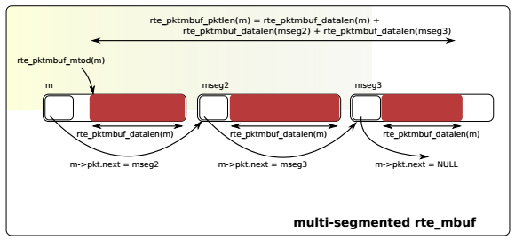
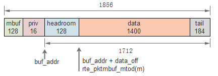

Mbuf¶
概述¶
DPDK mbuf实现了message buffer，可以存储报文数据或者控制信息等。mbuf存储在mempool中，以便在数据面提高访问性能。
原理¶
DPDK把元数据(metadata)和实际数据存储在一个mbuf中，并且使mbuf结构体尽量小，目前仅占用2个cache line，且最常访问的成员在第1个cache line中。
mbuf从前至后主要由mbuf首部(即rte_mbuf结构体)、head room、实际数据和tailroom构成。用户还可以在mbuf首部和head room之前加入一定长度的私有数据(private data)。head room的大小在DPDK编译配置文件(如common_linuxapp)中指定，如 CONFIG_RTE_PKTMBUF_HEADROOM=128 。mbuf的基本结构如下图所示：
一些指针、成员或函数结果的内容在下表中列出，mbuf指针简写为m：
| 项 | 内容 |
|---|---|
| m | 首部，即mbuf结构体 |
| m->buf_addr | headroom起始地址 |
| m->data_off | data起始地址相对于buf_addr的偏移 |
| m->buf_len | mbuf和priv之后内存的长度，包含headroom |
| m->pkt_len | 整个mbuf链的data总长度 |
| m->data_len | 实际data的长度 |
| m->buf_addr+m->data_off | 实际data的起始地址 |
| rte_pktmbuf_mtod(m) | 同上 |
| rte_pktmbuf_data_len(m) | 同m->data_len |
| rte_pktmbuf_pkt_len | 同m->pkt_len |
| rte_pktmbuf_data_room_size | 同m->buf_len |
| rte_pktmbuf_headroom | headroom长度 |
| rte_pktmbuf_tailroom | 尾部剩余空间长度 |
注：data_off = MIN(headroom_len, buf_len)
上图中的buf只有一个数据段，在某些情况下，比如要处理巨帧(jumbo frame)时，可以把多个mbuf链接起来组成一个mbuf。下图是包含3个数据段的mbuf：
对于链式的mbuf，仅在第一个mbuf结构体中包含元数据信息。
以下代码分别创建了两个mbuf，给它们添加数据，最后将它们组合成链。在此过程中打印了上表中的一些数据，可以帮助理解各指针和长度的含义，其中省去了错误处理代码。
1 2 3 4 5 6 7 8 9 10 11 12 13 14 15 16 17 18 19 20 21 22 23 24 25 26 27 28 29 30 31 32 33 34 35 | static int mbuf_demo(void)
{
int ret;
struct rte_mempool* mpool;
struct rte_mbuf *m, *m2;
struct rte_pktmbuf_pool_private priv;
priv.mbuf_data_room_size = 1600 + RTE_PKTMBUF_HEADROOM - 16;
priv.mbuf_priv_size = 16;
mpool = rte_mempool_create("test_pool",
ITEM_COUNT,
ITEM_SIZE,
CACHE_SIZE,
sizeof(struct rte_pktmbuf_pool_private),
rte_pktmbuf_pool_init,
&priv,
rte_pktmbuf_init,
NULL,
0,
MEMPOOL_F_SC_GET);
m = rte_pktmbuf_alloc(mpool);
mbuf_dump(m); // (1)
rte_pktmbuf_append(m, 1400);
mbuf_dump(m); // (2)
m2 = rte_pktmbuf_alloc(mpool);
rte_pktmbuf_append(m2, 500);
mbuf_dump(m2);
ret = rte_pktmbuf_chain(m, m2);
mbuf_dump(m); // (3)
return 0;
}
|
首先注意第8，9，16行，为了演示用户私有数据，在创建mempool时传入了priv，这将在每个mbuf的首部后面添加16字节的私有数据，然后才是head room。内存池对象数目、第个对象的大小和cache大小分别是:
#define ITEM_COUNT 1024
#define ITEM_SIZE (1600 + sizeof(struct rte_mbuf) + RTE_PKTMBUF_HEADROOM)
#define CACHE_SIZE 32
1600是预估的一个packet的最大长度。
在(1)处，新分配了一个mbuf m，此时m的data长度为0，打印结果如下:
RTE_PKTMBUF_HEADROOM: 128
sizeof(mbuf): 128
m: 0x7fbf1a810000
m->buf_addr: 0x7fbf1a810090
m->data_off: 128
m->buf_len: 1712
m->pkt_len: 0
m->data_len: 0
m->buf_addr+m->data_off: 0x7fbf1a810110
rte_pktmbuf_mtod(m): 0x7fbf1a810110
rte_pktmbuf_data_len(m): 0
rte_pktmbuf_pkt_len(m): 0
rte_pktmbuf_headroom(m): 128
rte_pktmbuf_tailroom(m): 1584
rte_pktmbuf_data_room_size(mpool): 1712
rte_pktmbuf_priv_size(mpool): 16
用图表示如下：

在(2)，用rte_pktmbuf_append模拟给m填充了1400字节的data，此时打印结果如下:
m: 0x7fbf1a810000
m->buf_addr: 0x7fbf1a810090
m->data_off: 128
m->buf_len: 1712
m->pkt_len: 1400
m->data_len: 1400
m->buf_addr+m->data_off: 0x7fbf1a810110
rte_pktmbuf_mtod(m): 0x7fbf1a810110
rte_pktmbuf_data_len(m): 1400
rte_pktmbuf_pkt_len(m): 1400
rte_pktmbuf_headroom(m): 128
rte_pktmbuf_tailroom(m): 184
rte_pktmbuf_data_room_size(mpool): 1712
rte_pktmbuf_priv_size(mpool): 16
用图表示如下：
之后创建m2并给它添加data，在(3)处将m与m2连接，m做为链的首节点，此时m的打印结果如下:
m: 0x7fbf1a810000
m->buf_addr: 0x7fbf1a810090
m->data_off: 128
m->buf_len: 1712
m->pkt_len: 1900
m->data_len: 1400
m->buf_addr+m->data_off: 0x7fbf1a810110
rte_pktmbuf_mtod(m): 0x7fbf1a810110
rte_pktmbuf_data_len(m): 1400
rte_pktmbuf_pkt_len(m): 1900
rte_pktmbuf_headroom(m): 128
rte_pktmbuf_tailroom(m): 184
rte_pktmbuf_data_room_size(mpool): 1712
rte_pktmbuf_priv_size(mpool): 16
注意pkt_len的变化，它已经加上了m2的500字节。如果此时打印m—>next， 会发现m->next == m2。
数据结构¶
rte_mbuf(librte_mbuf/rte_mbuf.h):
struct rte_mbuf {
MARKER cacheline0;
void *buf_addr; /**< Virtual address of segment buffer. */
phys_addr_t buf_physaddr; /**< Physical address of segment buffer. */
uint16_t buf_len; /**< Length of segment buffer. */
/* next 6 bytes are initialised on RX descriptor rearm */
MARKER8 rearm_data;
uint16_t data_off;
/**
* 16-bit Reference counter.
* It should only be accessed using the following functions:
* rte_mbuf_refcnt_update(), rte_mbuf_refcnt_read(), and
* rte_mbuf_refcnt_set(). The functionality of these functions (atomic,
* or non-atomic) is controlled by the CONFIG_RTE_MBUF_REFCNT_ATOMIC
* config option.
*/
union {
rte_atomic16_t refcnt_atomic; /**< Atomically accessed refcnt */
uint16_t refcnt; /**< Non-atomically accessed refcnt */
};
uint8_t nb_segs; /**< Number of segments. */
uint8_t port; /**< Input port. */
uint64_t ol_flags; /**< Offload features. */
/* remaining bytes are set on RX when pulling packet from descriptor */
MARKER rx_descriptor_fields1;
/*
* The packet type, which is the combination of outer/inner L2, L3, L4
* and tunnel types.
*/
union {
uint32_t packet_type; /**< L2/L3/L4 and tunnel information. */
struct {
uint32_t l2_type:4; /**< (Outer) L2 type. */
uint32_t l3_type:4; /**< (Outer) L3 type. */
uint32_t l4_type:4; /**< (Outer) L4 type. */
uint32_t tun_type:4; /**< Tunnel type. */
uint32_t inner_l2_type:4; /**< Inner L2 type. */
uint32_t inner_l3_type:4; /**< Inner L3 type. */
uint32_t inner_l4_type:4; /**< Inner L4 type. */
};
};
uint32_t pkt_len; /**< Total pkt len: sum of all segments. */
uint16_t data_len; /**< Amount of data in segment buffer. */
uint16_t vlan_tci; /**< VLAN Tag Control Identifier (CPU order) */
union {
uint32_t rss; /**< RSS hash result if RSS enabled */
struct {
union {
struct {
uint16_t hash;
uint16_t id;
};
uint32_t lo;
/**< Second 4 flexible bytes */
};
uint32_t hi;
/**< First 4 flexible bytes or FD ID, dependent on
PKT_RX_FDIR_* flag in ol_flags. */
} fdir; /**< Filter identifier if FDIR enabled */
struct {
uint32_t lo;
uint32_t hi;
} sched; /**< Hierarchical scheduler */
uint32_t usr; /**< User defined tags. See rte_distributor_process() */
} hash; /**< hash information */
uint32_t seqn; /**< Sequence number. See also rte_reorder_insert() */
uint16_t vlan_tci_outer; /**< Outer VLAN Tag Control Identifier (CPU order) */
/* second cache line - fields only used in slow path or on TX */
MARKER cacheline1 __rte_cache_aligned;
union {
void *userdata; /**< Can be used for external metadata */
uint64_t udata64; /**< Allow 8-byte userdata on 32-bit */
};
struct rte_mempool *pool; /**< Pool from which mbuf was allocated. */
struct rte_mbuf *next; /**< Next segment of scattered packet. */
/* fields to support TX offloads */
union {
uint64_t tx_offload; /**< combined for easy fetch */
struct {
uint64_t l2_len:7; /**< L2 (MAC) Header Length. */
uint64_t l3_len:9; /**< L3 (IP) Header Length. */
uint64_t l4_len:8; /**< L4 (TCP/UDP) Header Length. */
uint64_t tso_segsz:16; /**< TCP TSO segment size */
/* fields for TX offloading of tunnels */
uint64_t outer_l3_len:9; /**< Outer L3 (IP) Hdr Length. */
uint64_t outer_l2_len:7; /**< Outer L2 (MAC) Hdr Length. */
/* uint64_t unused:8; */
};
};
/** Size of the application private data. In case of an indirect
* mbuf, it stores the direct mbuf private data size. */
uint16_t priv_size;
/** Timesync flags for use with IEEE1588. */
uint16_t timesync;
/* Chain of off-load operations to perform on mbuf */
struct rte_mbuf_offload *offload_ops;
}
分配与回收¶
初始化¶
mbuf存放在mempool中，在创建mempool时，如果指定了对象初始化回调函数，如上面例子中的rte_pktmbuf_init()，将会对其中每个mbuf调用此函数进行初始化，为某些成员赋值。
分配¶
调用rte_mempool_get()从mempool中获取一个mbuf，并将其引用计数置1。
回收¶
对于direct mbuf，直接调用rte_mempool_put()进行放回mempool；对于indirect mbuf，需要先detach，然后再free它所attach的实际mbuf。
回收mbuf时，会回收mbuf链上的所有mbuf节点。
元信息¶
见 Meta Information 。似乎 Rx端网卡并不能填充l2_type, l3_type等信息。
Direct和Indirect mbuf¶
上面描述的mbuf，由mbuf结构体首部、headroom和data等部分组成，实际持有数据，这样的mbuf称为direct mbuf。但在某些时候，比如需要复制或分片报文时，可能会用到另一种mbuf，它并不真正的持有数据，而是引用direct mbuf的数据，类似于对象的浅拷贝，这种mbuf称为indirect mbuf。
可以通过attach操作生成一个indirect mbuf。每个mbuf都有一个引用计数，当direct mbuf被attach时，它的引用计数+1；当被deattch时，引用计数-1。当引用计数为0时，意味着direct mbuf没人使用，可以被释放了。
indirect mbuf机制有一些限制条件：
- 不能attach一个indirect mbuf
- attach之前，mbuf的引用计数必须是1，也就是说，它没有被其他mbuf引用过
- 不能把indirect mbuf再次attach到一个direct mbuf，除非先deattch
虽然可以直接调用attach/detach操作，但推荐使用clone操作来浅拷贝mbuf，因为clone会正确处理链式mbuf。
参考¶
| [dpdk_guide_mbuf] | DPDK programmer’s guide - Mbuf |